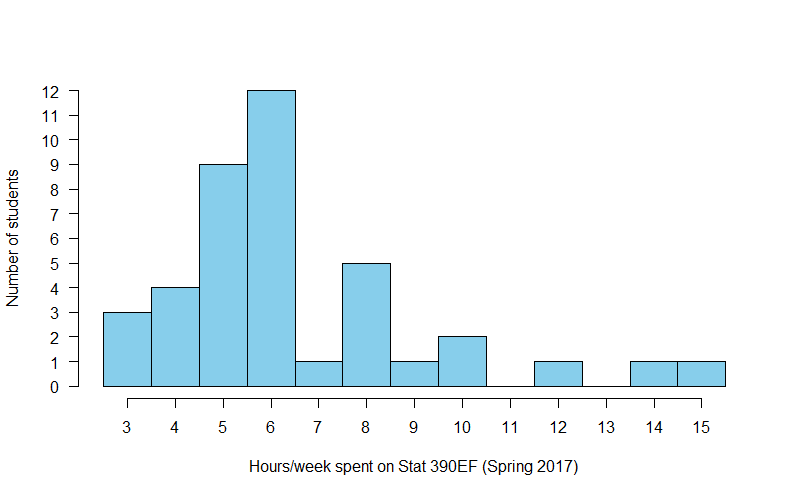

STAT 390EF FAQs
Many of the following FAQs are compiled based on comments students made in the past semesters. Click the questions to see our responses.
As mentioned in the syllabus, anticipate spending 6–8 hours a week. The following is a plot showing the distribution of the average number of hours students spent in the course in the Spring 2017 semester. The data were gathered from an anonymous survey near the end of the semester. The mean is 6.5 hrs/week and the median is 6 hrs/week.

For many people, this course does require hard work to get an A. In Spring 2017, 36 out of 45 students got A and A+ (77%). Of course, these were students who finished the course. Those who were not happy about the grade they would get dropped the course.
It is true that weeks 4-7 are demanding, and it is partly intentional. We want people to know that this is not an easy course. It requires hard work and is time consuming. This is an independent study. This course is not for everyone. Some people cannot learn well by just studying the material on their own. We believe that there is no shortcut in learning a programming language. Making the workload somewhat heavier in those weeks is to encourage students who don't have the time or who aren't willing to spend the time required for this course to drop.
R is a programming language for statistical analysis and computing. We don't want to just tell you a bunch of commands. We hope you can gain experience in using R to do data analysis and solve statistical problems. So you need to know Statistics in order to benefit from learning R. If you were in Stat 200 L1 or L2, you probably had heard the instructor discouraging people from taking this course. For people who have no experience in computer programming, it's too much to learn Statistics and R at the same time. It's a cognitive overload.
As we mention above, we don't want to just tell you a bunch of commands. We hope you will be able to use R to perform data analysis. To be able to do that, you need to learn the basic programming skills and structure in R. As with all computer programming, you need to spend time practicing it over and over in order to be good at it. We believe that there is no shortcut in learning a programming language. It requires even harder work if you have no prior programming experience. We are trying to make the course 3 credit hours, but it may take a while. Until then, it's up to you to decide if it's worth taking this 2-credit-hour independent study.
We think the questions are very clear, but since we made them we might not realize that they might not be clear from the student's point of view. If you think the questions are not clear, post suggestions on the Lon Capa message board to help us make improvements.
The student who made this comment also indicated that he/she didn't use Peng textbook and videos. So he/she skipped all the required reading assignments on the book. If you skipped the reading, you would end up paying for it later. Not only shouldn't you skip any reading assignment, but you have to read actively, actually doing all the calculations, not just reading about them.
The book spends 7 pages covering control structures, 15 pages covering functions, 18 pages covering loop functions. You can also watch the videos linked in the book if you prefer. There are total 15 minutes of videos on the control structure, 28 minutes of videos on functions, and 34 minutes of videos on loop functions.
These resources are not necessarily the best for beginners, but at least make an effort to study them if you are struggling.
Of course you're right, but we don't have the resources for this stuff. We are not getting paid to teach or develop materials for 390 and we are not even allowed to have a TA dedicated to 390. Requests for resources could be directed to the Statistics Department (dgs@illinois.edu).
This course doesn't have exams, so the HW assignments have dual purposes: practice + evaluation. We can make the HW count less to your course grade by having exams. We asked students in the previous semester if they'd like to have exams. Only 3 out of 49 people preferred to have exams.
Note that you don't have to get every question correct in order to get an A. It's ok to make a few mistakes in the HW problems as long as you learn from the mistakes.
First, you won't do extensive coding in this course. Most of the time you will only need to write a few lines of R code, which is nothing compared to writing 50-150 lines of codes from scratch in a typical course on computer programming. (For those of you who love coding, you may be disappointed in this course. Consider taking STAT 385 instead.)
Second, you just describe the experience of everyone who first learns to code. It's somewhat like doing algebric manipulations. One little careless mistake and you get a wrong answer. The difference here is that computers have zero tolerance on mistakes, and getting a working code is usually not the end of the exercise but an essential step in solving the problem you are asked.
Yes, coding can be time consuming, but you'll get better at it through constant practice and hard work. You might enjoy coding after a while. After years of hard work (if you choose to do so), you'll be able to correct a simple mistake at no time. Of course by then you'll probably be working with a complex code with thousands of lines, and you'll be faced with subtle bugs that may take hours, days, or weeks to fix.
A friend of mine once told me that he likes catching bugs and fixing them. To him it's more entertaining than playing video games! Even if you don't share his passion, having some experience on coding can still be valuable.